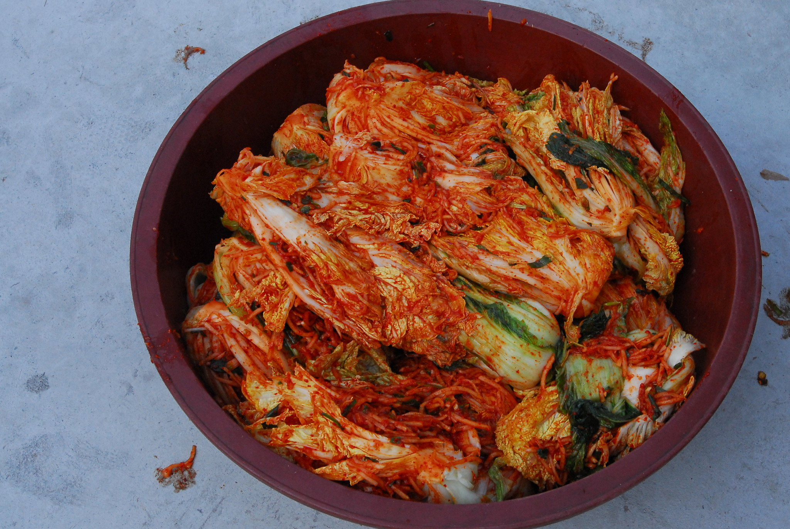

Home
Kimchi

Description
Kimchi is a traditional Korean side dish made from salted and fermented vegetables.
There are many vegetables that can be used, but in this recipe, we will be using napa cabbage, one of the most common vegetables used for kimchi.
Many seasonings, such as Korean chili powder, spring onions, garlic ,ginger, and salted seafood are used.
Ingredients
- 2 heads of napa cabbage
- 1.25 cups of coarse sea salt
- 5 green onions, chopped
- 0.5 small white onion, minced
- 2 tablespoons white sugar
- 1 tablespoon fish sauce
- 2 cloves garlic, minced
- 1 teaspoon ground ginger
- 5 tablespoons gochugaru (Korean chili powder)
Steps
- Cut cabbages in half lengthwise; trim ends. Rinse; cut into pieces about 2-inch squares. Place cabbage into large resealable bags; sprinkle salt evenly over leaves to coat. Rub salt into cabbage using your hands. Squeeze out excess air, seal the bags, and leave at room temperature for 6 hours.
- Rinse cabbage leaves under cold water, at least 2 to 3 times, to remove most of the salt; drain and squeeze out any excess liquid.
- Place rinsed cabbage in a large container with a tight fitting lid; stir in green onions, white onion, sugar, fish sauce, garlic, and ginger. Sprinkle Korean chili powder over mixture; rub into cabbage leaves until evenly coated wearing plastic gloves to protect your hands.
- Seal the container; set in a cool dry place. Leave undisturbed for 4 days. Refrigerate before serving. Store in the refrigerator for up to 1 month (if it lasts that long!).
Recipe from allrecipes.
Picture from flickr.